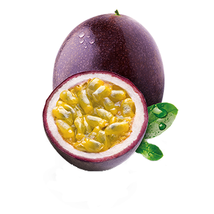

Result.
If you are a passionfruit, you have a wide spectrum of interests and friends. You enjoy being around others and most definitely blend with the crowd very well. You have a bubbly and passionate personality, but you do not show a lot of your true feelings sometimes, which can backfire and can be viewed as bipolar. You love getting involved and being around people, but have hard time fixating your passion on one thing. You don't like to be disliked by others. Overall, you have a big heart, so you are most likely liked by a lot of people around you!